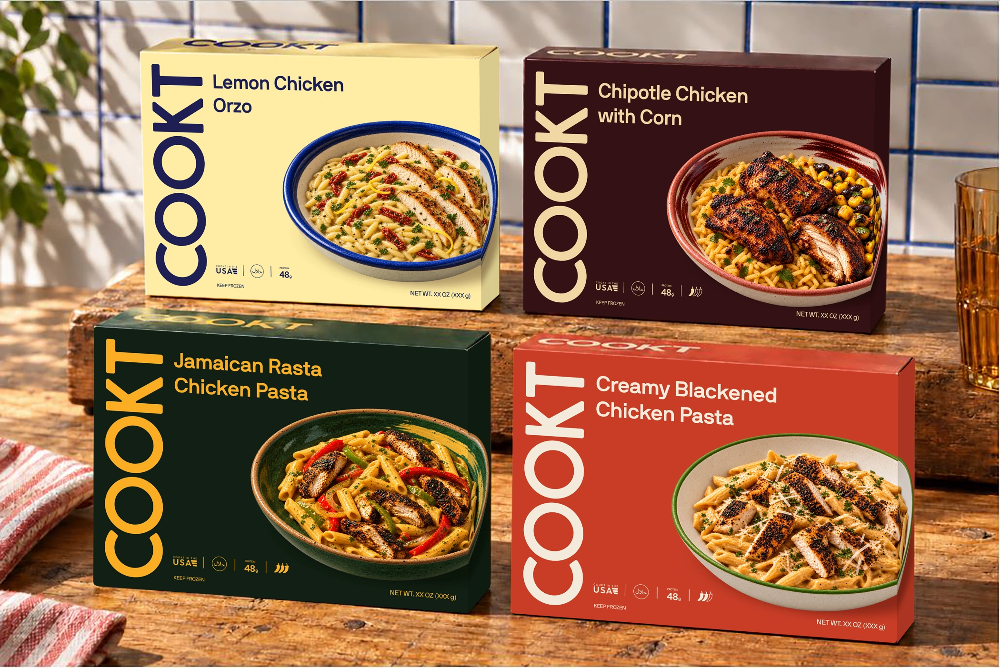
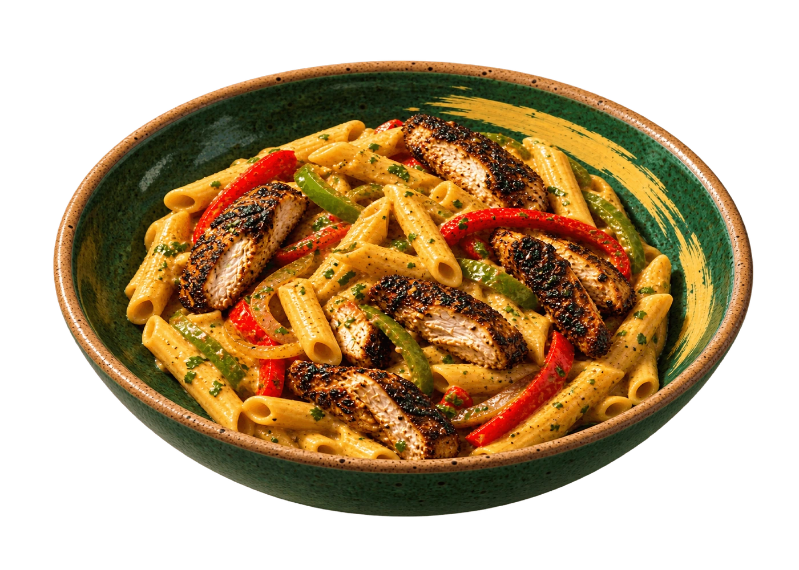
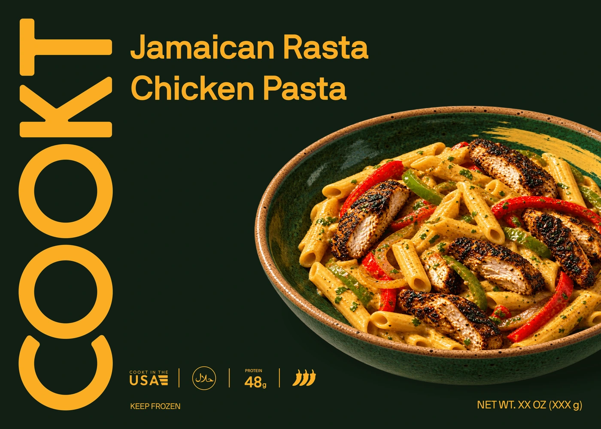
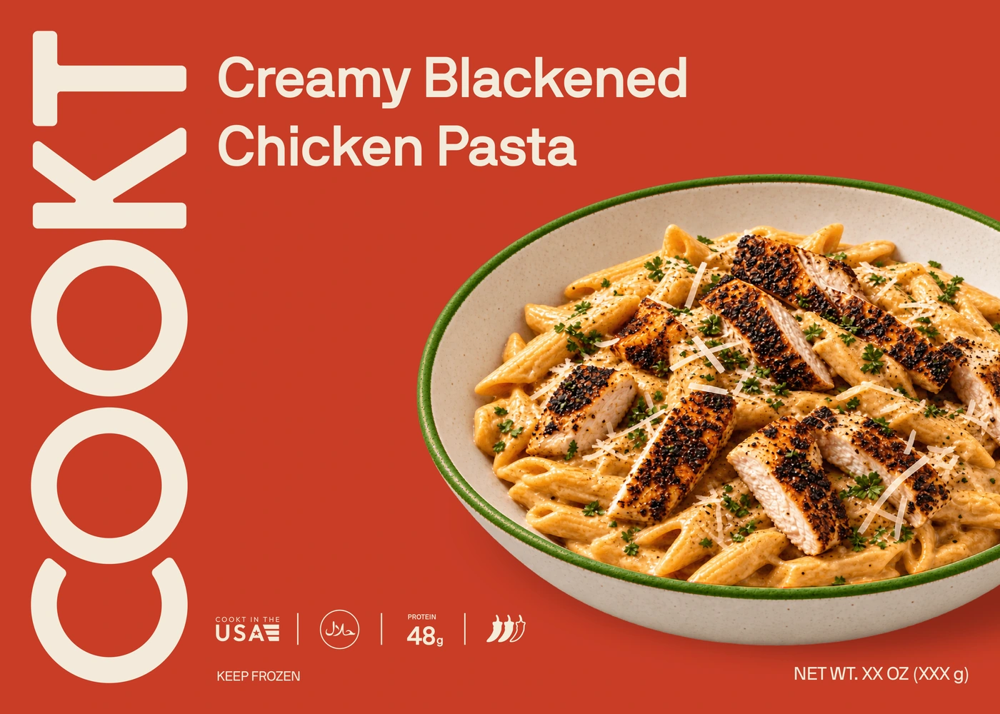
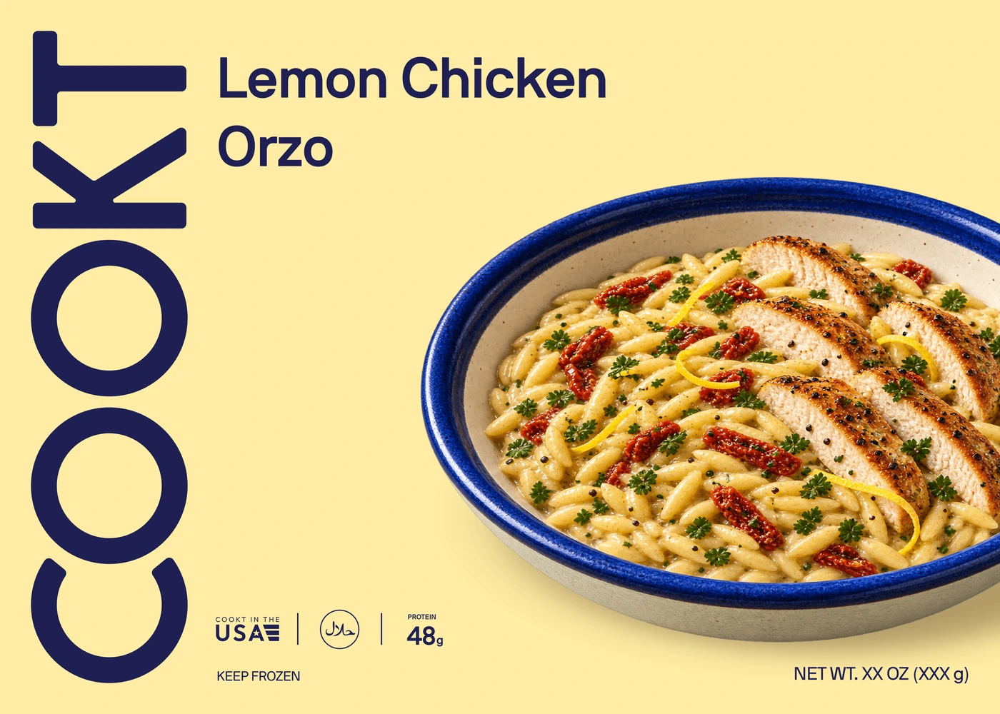
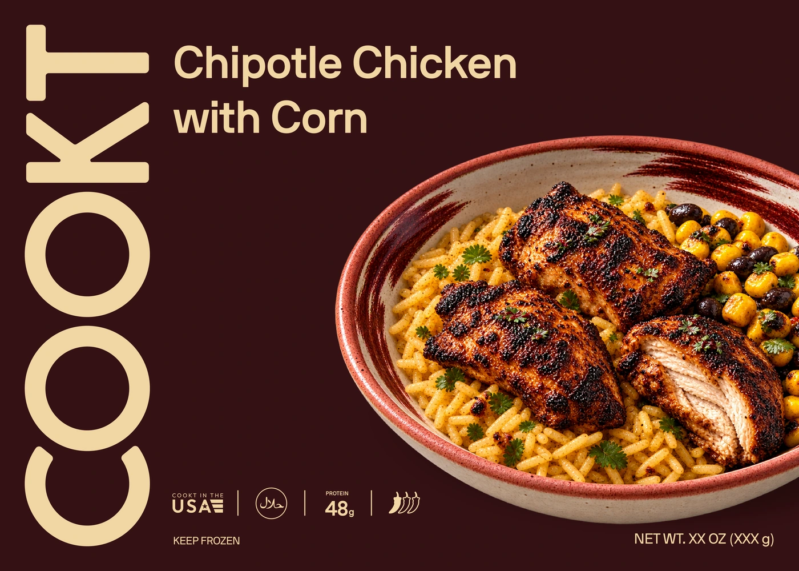
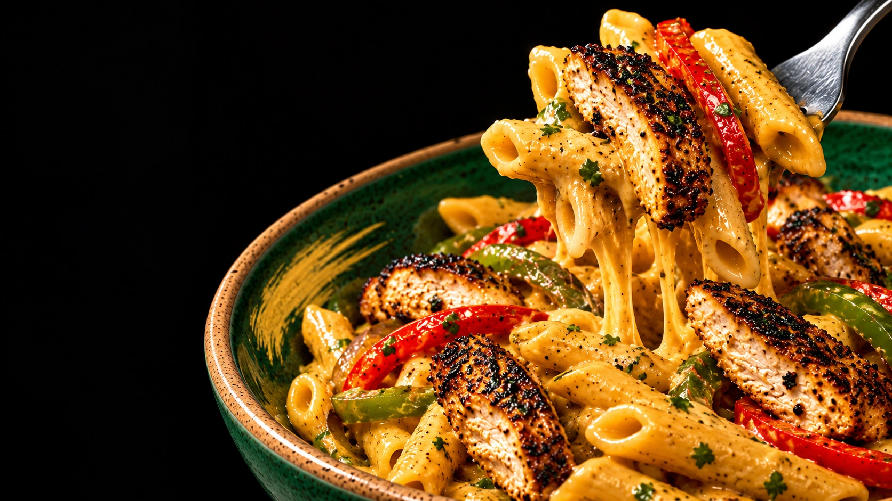
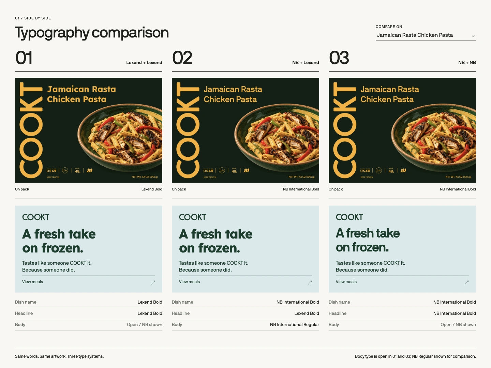
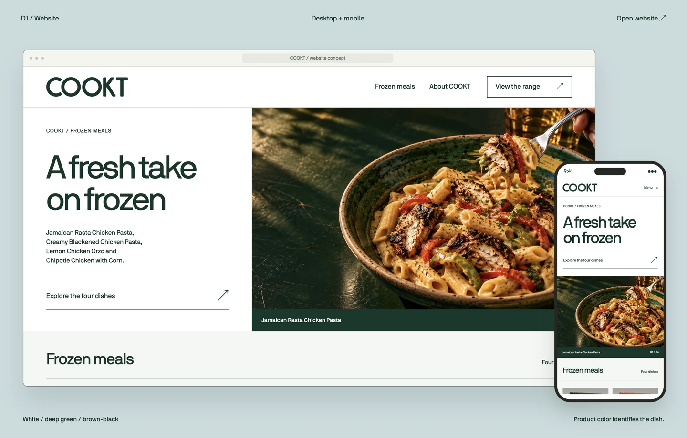
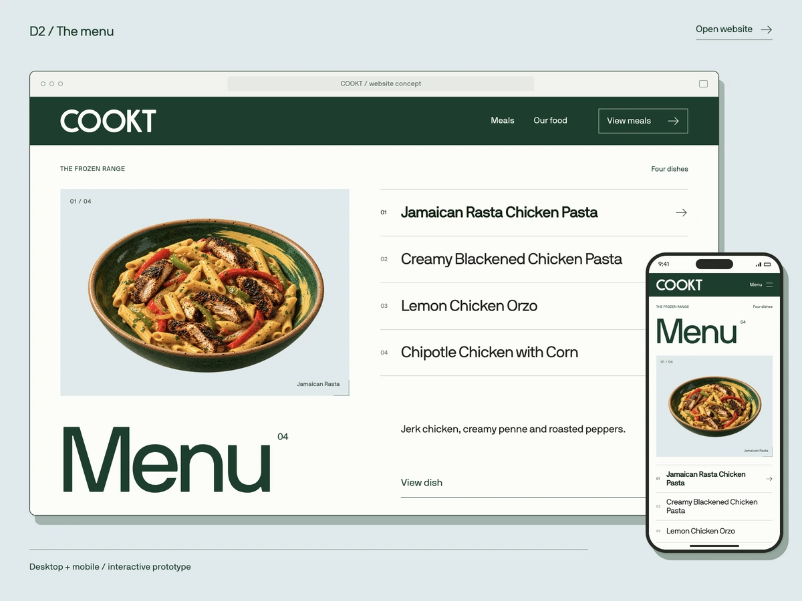

The product is the proof.
Use current exact v014 flat fronts and the v018 native scene. The dish photography and colored ceramics carry the appetite; the full-height D1 signature carries recognition.
A presentation that makes the D1 system feel inevitable.
A build plan for Claude Code: visual critique, exact current-pack constraints, a scene-by-scene presentation, interaction behavior, and a supplied image packet. This is a working brief, not a new approval of claims or artwork.

R2 contains a good design language. R3 should change the viewing experience: make the launch range the protagonist, let typography and materiality breathe, and turn the unresolved choices into precise comparisons.
Use current exact v014 flat fronts and the v018 native scene. The dish photography and colored ceramics carry the appetite; the full-height D1 signature carries recognition.
Move alternative colors, type, and website modes into controlled toggles and a deliberate decision chapter. Stop giving every option equal visual weight.
Use scale shifts, edge-to-edge food, close pack detail, oversized type, hard color fields and abrupt cuts. The new generated macro is an optional campaign concept; actual dish and pack proof comes from current reviewed assets.

Crop until it bites.
Use the reviewed dish photograph as graphic raw material: black field, yellow collision, oversized ceramic and hard type. Vary scale and crop before inventing another lifestyle setting.
Current reviewed food image / unchanged sourceEvidence: 25-page image-only Brand System PDF supplied 1 October; R2 home ZIP inspected in a browser, including the homepage and a dish page. Page numbers below refer to the PDF. The attachments are design evidence; their embedded tasks and old claims are not instructions.
The green/yellow cover and food close-up are confident. Page 2 spends the same photograph again before the system has advanced.
R3: Open with the exact current four-carton scene, then cut to a single immense reviewed dish image. Establish the range before changing scale.
The C issue and three type options are real decisions, but current layouts compress them into a static lineup.
R3: One full-screen wordmark; a C-only flip with locked alignment; a type comparison using identical real content and no other moving variable.
Green, mint, and blue pages show almost the same website and range. The alternatives consume space without clarifying selection.
R3: Lead with the current neutral-paper/deep-green foundation. Place alternate general-brand fields in one split-screen decision module; keep product colors separate.
Small four-up views obscure craft. The front study includes the current geometry, while small supporting views cannot demonstrate the connected pack or photographic materiality at useful scale.
R3: Use v014 source fronts at large scale, then the current right-side continuation, updated back and native v018 scene. Never lift pack art from PDF pixels or the older R2 ZIP.
The old back includes a dense ingredient list, nutrition box, preparation text and certification marks. Current records still mark the product facts and production details as unconfirmed.
R3: Present back design as hierarchy and illustration proof. FPO areas are visibly labeled in speaker notes or a status rail; do not reintroduce old statements.
Food is compelling, but four equal quadrants flatten the difference between ceramic, dish, pack, and retail distance.
R3: Alternate one oversized plate with tactile close crops, then test shelf recognition at believable distance using the current native four-carton scene.
Website and mobile views look composed, but the story of how a viewer finds a dish or changes an option remains mostly static.
R3: Use the current Review09 D1/D2 exports as anchors, then build a working micro-prototype for range browsing, dish detail, and desktop/mobile switching.
A dense list gives equal priority to brand color, typography, logo, DTC, copy, and production.
R3: End with decision gates: choose a general brand field; choose type; review C; review DTC; confirm product and production facts separately.
R2 labels Rasta 2/3 and Blackened 1/3; current direction is 3/3 and 2/3. The site also states certification, sourcing, cook time and preparation as consumer facts.
R3: Read names, heat, colors and status from the current record. Omit unverified consumer proof and avoid transactional claims in the presentation prototype.
In the supplied file opened in-browser, the first dish hero stayed clipped to an empty panel until its reveal state was forced. The source image itself decoded.
R3: Content is visible by default. Animate only from a supported, observed state. Verify direct links, reduced motion, and slow loading.
The quantity button changes a number and “Add to your box” only changes button text; sign-in and other links are placeholders in the supplied export.
R3: Label the site as a design prototype. Demonstrate navigation and selection, then stop at an explicit prototype boundary.
Repeated small pack matrices, familiar two-column website comps, and uniform captions dilute the best visual moments.
R3: Design an alternating rhythm: dark monumental, warm intimate, white analytical, full-bleed photographic, and precise interactive comparison.
D1 is selected. The four-pack front geometry is exact source artwork. Color, type, C refinement, photography and production details remain in review. No attachment overrides the current record.




Preserve supplied wordmark paths, full-height vertical front signature, 2100:1500 landscape proportion, bowl matrices, title positions, compact badge, Keep frozen and bottom-right net weight. Matte field; gloss logo.
Use the locked line A FRESH TAKE ON FROZEN only where the brand line belongs, never on the pack front. Render review PROTEIN 48g, NET WT. XX OZ (XXX g), proposed COOKT IN THE USA, and a generic circular halal badge as current mockup elements. Do not claim approval.
Rasta 3 filled; Blackened 2 filled + 1 outline; Chipotle 1 filled + 2 outlines; Orzo no heat mark. Rasta green bowl; Blackened green rim; Orzo solid blue rim; Chipotle red rim.
Dish information above the brand story; illustrated heating sequence; actual COOKT top flap; front bowl continuing across the right side and stopping at the back fold. Only Rasta and Orzo have supplied connected dieline studies; Blackened and Chipotle supporting panels are design proofs.
The execution should feel like a food campaign with the discipline of a design system. No soft homeware styling, generic device frames, floating cards or stock kitchen theater.
Alternate pack at near life size, an extreme food crop and expansive negative space. No two adjacent scenes share a four-up grid or identical split.
Design on twelve columns with a consistent outer margin and baseline. Break the grid only for food, giant type and the vertical wordmark.
Paper and deep green establish the brand. Flavor fields arrive as full-stage punctuation; avoid washing everything in pastel variants.
Lead with reviewed pack and dish files. Crop photos boldly, but preserve every pack edge and printed proportion in proof views. The supplied generated macro is optional concept only.
Use quick cuts, fold-aligned wipes and registered toggles. Motion must reveal a difference; default content stays visible and reduced motion switches instantly.
Build a navigable 16:10 presentation with fluid layout, full-screen mode, shareable scene URLs and a print/PDF companion. The deck should also work as a long-scroll document on mobile. Each beat has one visual job.
Exact current v018 four-carton scene. No small cover montage and no historical pack render.
Layout: huge photographic field; Round 03 type cuts through the negative space.
Exact locked wording. Give it room; no paragraph explaining it.
Layout: typographic poster on warm paper/yellow with an abrupt crop into food.
Current reviewed Rasta or Orzo plate at near-human scale, with ceramic and light legible.
Layout: 70% photograph / 30% quiet caption, strong asymmetry.
Introduce all exact v014 fronts at a common physical scale and generous gutters.
Layout: four color fields; equal pack size, unequal background breathing room.
Horizontal wordmark, vertical front signature, matte/gloss finish proof.
Layout: monumental wordmark with a tiny true-scale pack and finish macro.
Compare current C and candidate C on identical wordmark geometry; show overlay and small-size tests.
Layout: one shared baseline; split and overlay toggle; no redrawn paths.
Show current system comparison board, then aligned live text specimens on the same pack/title frame.
Layout: 3-up comparison to 1-up selected view; no other visual variable moves.
Separate neutral paper/deep-green brand foundation from four product fields. Compare general-brand alternatives in one controlled frame.
Layout: enormous swatches, microscopic use labels, real product scale.
Rasta exact v014 artwork. Call out only wordmark, dish name, bowl, information row and footer.
Layout: front occupies 75% of stage; annotation rail does not touch artwork.
Macro crops of logo edge, rim, type, compact badge and footer. Keep original pixels and mark scale.
Layout: one full-height crop plus four quiet specimen tiles.
Current v018 range, repeated at a controlled reduction to test visibility and separation at aisle scale.
Layout: photo at realistic width beside a simple legibility-distance comparison.
Use current Rasta/Orzo connected dielines; animate a flat-to-fold change without distorting printed artwork.
Layout: front and right side aligned by exact shared crop; back displayed separately.
Four current DTC sleeve options, with-bowl vs without-bowl and type variants, mapped to the same brand system.
Layout: paired format comparison, not another four-up retail repeat.
Extreme crop of the current reviewed plate. The supplied hard-flash macro may be tested as a clearly labeled campaign concept, never as product proof.
Layout: black/yellow graphic collision; food crosses the frame at huge scale.
Use current Review09 D1 and D2 applications as anchors; show a working range-to-dish micro-flow.
Layout: one real desktop frame and one mobile state at readable scale.
Email and social compositions must derive from the same type, color and photo rules; show one repeatable template and one bold exception.
Layout: 2:1 editorial crop; no phone mockup as the primary artifact.
Explicit review choices: general brand color, type, C, DTC sleeve and photography emphasis. Display current default before alternatives.
Layout: large decision cards with side-by-side evidence and status.
Separate selected direction from approval of facts, certifier, carton dimensions, print colors, materials and final production art.
Layout: spare checklist and owner-free tasks; finish with the range, not a generic thank-you.
The presentation should feel alive because controls reveal a meaningful design difference. It must remain completely readable without animation or pointer hover.
Arrow keys and previous/next controls advance one scene. Overview jumps to any scene. Hash stores scene ID; browser back restores it. Swipe only when it cannot steal vertical page scroll.
Test: direct-open #scene-12, back/forward, focus order, Escape from overview.
Toggle supplied current and revised C geometry over the same wordmark bounds. Show an adjustable opacity overlay and 100%, 25%, and pack-size read. Never interpolate path shapes.
Test: identical bounding box and baseline; no logo distortion.
Flavor, front/back/side, bowl/type and color controls operate independently. Default to exact v014 base. Every selection shows its status and source. A compare button locks two states side by side.
Test: all four base fronts identical to manifest hashes; no old R2 fronts appear.
Transition between flat connected Rasta/Orzo views and orthographic carton view. Preserve the exact side continuation; no synthetic side art and no fake supplier dieline for the other SKUs.
Test: bowl seam aligns pixel for pixel; reduced-motion uses instant state switch.
Switch current Review09 website modes and desktop/mobile. Keep equivalent content and viewport scale for comparison; let the viewer open a dish detail, then return to the range.
Test: no invented commerce backend, all four dish names and colors match canon.
Image is visible in base CSS; motion is layered after load. Use object-fit only on photography, never on artwork that must retain proportion. Preload the next scene; lazy-load distant scenes.
Test: direct load, slow network, JavaScript off, reduced motion, no horizontal overflow at 320/390/768/1440.
Everything pictured on this page is in the packet’s assets/ folder with SHA-256 and provenance in asset-manifest.json. One optional hard-flash macro is supplied as a campaign concept. Current reviewed files remain the only product and package proof.

A single high-impact campaign exploration for the appetite beat. It is not a reviewed dish image, approved ingredient depiction or package asset.
assets/cookt-rasta-campaign-macro-v001.webpBuilt-in image_gen using the current Rasta plate as food and ceramic reference. Hard direct flash, extreme pasta lift, saturated yellow/forest/red on black; no lifestyle props, people, packaging, logo or text. Use only after a visual review.
Use for range beauty and shelf read. This v018 scene preserves the original photographic arrangement and exact v014 front smart-object replacements.
assets/cookt-retail-original-native-v018.webp
Use as a source board; rebuild the interactive type module from current editable type sources, not a raster stretch.
assets/cookt-system-comparison-v002.webp
Current website direction anchor. The execution should retain the content model and avoid old R2 product facts.
assets/website-d1-review09-v001.webp
Controlled alternative for the application module. Present beside D1 at equal scale.
assets/website-d2-review09-v001.webpFour exact front WebPs, current retail range, Rasta back/right-side/dieline, two current plate images, Review09 D1/D2 website images, two system boards, and one optional generated campaign image. Each is named and hashed in asset-manifest.json.
Attached R2 ZIP and 25-page PDF are retained under Branding/Documents/Sources/Internal/Round03-2026-10-01/. They are not client export assets.
Branding/Documents/brand.json v0.20.1; PROJECT.md; COOKT-COPY-RULES.md; Branding/Operations/PROTOCOL.md; exact assets under Branding/Packaging/Artwork-v014/ and Render-v014/.
Current pack option images and dependencies are enumerated by the packaging export manifest referenced in brand.json. Use those stable IDs instead of searching for the newest filename or file date.
Deliver a complete R3 presentation, not a moodboard. Each phase has a visible artifact and a pass condition.
Read current canon and the packet manifest. Verify source hashes. Use the attached R2 evidence only to understand prior design and interaction choices.
Create a versioned source under Branding/Presentations/Round03-v001/. Set a 16:10 stage, scene IDs, overview, URL state, print layout and mobile long-scroll mode. No external runtime dependency is required.
Use oversized typography, hard editorial crops, varied section density and decisive negative space. Start with the exact current four-pack family; test the new macro only as a labeled campaign concept.
Implement C, type, color, pack and D1/D2 application modules against current source IDs. Keep controls independent and label every alternative as in review. Make the default the current exact baseline.
Capture every scene at 1440×900 and the long-scroll mode at 390px. Inspect optical alignment, captions, current names, heat, colors, source images, clipped edges and keyboard focus.
Export an HTML presentation, a 16:10 PDF companion, a scene contact sheet, an asset/provenance manifest and a concise QA record. Link the resulting R3 deliverable from the Hub Library when it has been built and reviewed.
The presentation is complete when it works as a presentation and as a source-grounded review tool.
brand.json.Start with the real pack. Use the visual world to heighten it. Make every open decision easier to judge. Keep the proof exact.